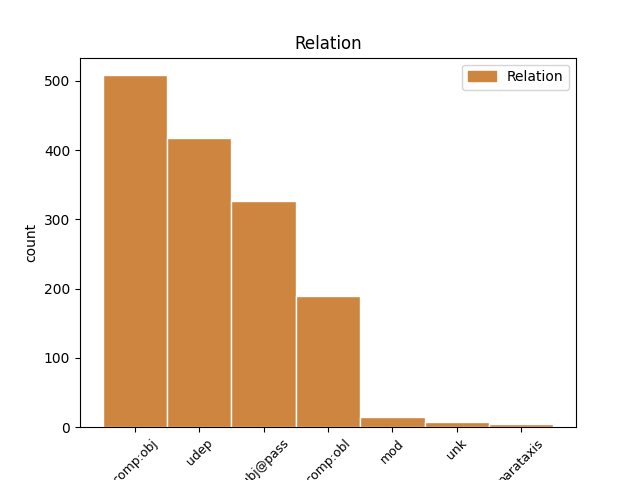
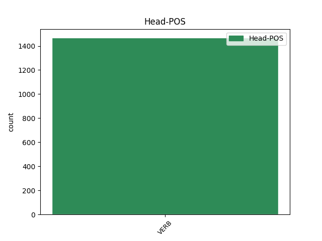
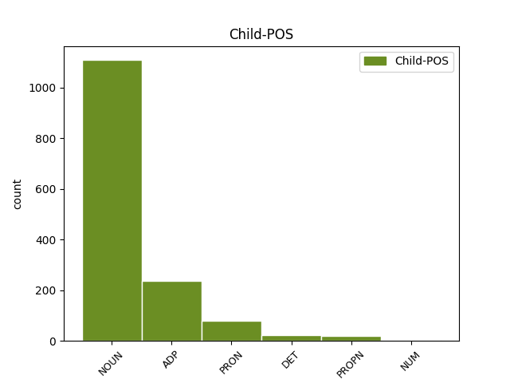

Distribution of features within this leaf



Agreement Rules sorted by frequency.
- When the dependent token is the subject(subj@pass) of the head token, and the head token is VERB and the dependent token is NOUN.
1 Ginčai ginčas NOUN dkt.vyr.dgs.V. Case=Nom|Gender=Masc|Number=Plur 6 subj@pass _ _
2 dėl _ _ _ _ 0 _ _ _
3 šio _ _ _ _ 0 _ _ _
4 reglamento _ _ _ _ 0 _ _ _
5 taikymo _ _ _ _ 0 _ _ _
6 nagrinėjami nagrinėti VERB vksm.dlv.neveik.es.vyr.dgs.V. Case=Nom|Definite=Ind|Gender=Masc|Number=Plur|Polarity=Pos|Tense=Pres|VerbForm=Part|Voice=Pass 0 _ _ _
7 įstatymų _ _ _ _ 0 _ _ _
8 nustatyta _ _ _ _ 0 _ _ _
9 tvarka _ _ _ _ 0 _ _ _
10 . _ _ _ _ 0 _ _ _
1 4 _ _ _ _ 0 _ _ _
2 . _ _ _ _ 0 _ _ _
3 Komitetas _ _ _ _ 0 _ _ _
4 vadovaujasi _ _ _ _ 0 _ _ _
5 Daugiabučių _ _ _ _ 0 _ _ _
6 namų _ _ _ _ 0 _ _ _
7 modernizavimo _ _ _ _ 0 _ _ _
8 programa _ _ _ _ 0 _ _ _
9 , _ _ _ _ 0 _ _ _
10 patvirtinta _ _ _ _ 0 _ _ _
11 Lietuvos _ _ _ _ 0 _ _ _
12 Respublikos _ _ _ _ 0 _ _ _
13 Vyriausybės _ _ _ _ 0 _ _ _
14 2004 _ _ _ _ 0 _ _ _
15 m _ _ _ _ 0 _ _ _
16 . _ _ _ _ 0 _ _ _
17 rugsėjo _ _ _ _ 0 _ _ _
18 23 _ _ _ _ 0 _ _ _
19 d _ _ _ _ 0 _ _ _
20 . _ _ _ _ 0 _ _ _
21 nutarimu _ _ _ _ 0 _ _ _
22 Nr _ _ _ _ 0 _ _ _
23 . _ _ _ _ 0 _ _ _
24 1213 _ _ _ _ 0 _ _ _
25 ( _ _ _ _ 0 _ _ _
26 Žin _ _ _ _ 0 _ _ _
27 . _ _ _ _ 0 _ _ _
28 , _ _ _ _ 0 _ _ _
29 2004 _ _ _ _ 0 _ _ _
30 , _ _ _ _ 0 _ _ _
31 Nr _ _ _ _ 0 _ _ _
32 . _ _ _ _ 0 _ _ _
33 143-5232 _ _ _ _ 0 _ _ _
34 ; _ _ _ _ 0 _ _ _
35 2005 _ _ _ _ 0 _ _ _
36 , _ _ _ _ 0 _ _ _
37 Nr _ _ _ _ 0 _ _ _
38 . _ _ _ _ 0 _ _ _
39 78-2839 _ _ _ _ 0 _ _ _
40 ) _ _ _ _ 0 _ _ _
41 , _ _ _ _ 0 _ _ _
42 Valstybės _ _ _ _ 0 _ _ _
43 paramos _ _ _ _ 0 _ _ _
44 daugiabučiams _ _ _ _ 0 _ _ _
45 namams _ _ _ _ 0 _ _ _
46 modernizuoti _ _ _ _ 0 _ _ _
47 teikimo _ _ _ _ 0 _ _ _
48 ir _ _ _ _ 0 _ _ _
49 investicijų _ _ _ _ 0 _ _ _
50 projektų _ _ _ _ 0 _ _ _
51 energinio _ _ _ _ 0 _ _ _
52 efektyvumo _ _ _ _ 0 _ _ _
53 nustatymo _ _ _ _ 0 _ _ _
54 taisyklėmis _ _ _ _ 0 _ _ _
55 , _ _ _ _ 0 _ _ _
56 patvirtintomis patvirtinti VERB vksm.dlv.neveik.būt.mot.dgs.Įn. Case=Ins|Definite=Ind|Gender=Fem|Number=Plur|Polarity=Pos|Tense=Past|VerbForm=Part|Voice=Pass 0 _ _ _
57 Lietuvos _ _ _ _ 0 _ _ _
58 Respublikos _ _ _ _ 0 _ _ _
59 finansų _ _ _ _ 0 _ _ _
60 ministro _ _ _ _ 0 _ _ _
61 ir _ _ _ _ 0 _ _ _
62 aplinkos _ _ _ _ 0 _ _ _
63 ministro _ _ _ _ 0 _ _ _
64 2005 _ _ _ _ 0 _ _ _
65 m _ _ _ _ 0 _ _ _
66 . _ _ _ _ 0 _ _ _
67 rugpjūčio _ _ _ _ 0 _ _ _
68 12 _ _ _ _ 0 _ _ _
69 d _ _ _ _ 0 _ _ _
70 . _ _ _ _ 0 _ _ _
71 įsakymu įsakymas NOUN dkt.vyr.vns.Įn. Case=Ins|Gender=Masc|Number=Sing 56 comp:obj _ _
72 Nr _ _ _ _ 0 _ _ _
73 . _ _ _ _ 0 _ _ _
74 1K-237/D1-394 _ _ _ _ 0 _ _ _
75 ( _ _ _ _ 0 _ _ _
76 Žin _ _ _ _ 0 _ _ _
77 . _ _ _ _ 0 _ _ _
78 , _ _ _ _ 0 _ _ _
79 2005 _ _ _ _ 0 _ _ _
80 , _ _ _ _ 0 _ _ _
81 Nr _ _ _ _ 0 _ _ _
82 . _ _ _ _ 0 _ _ _
83 102-3792 _ _ _ _ 0 _ _ _
84 ) _ _ _ _ 0 _ _ _
85 , _ _ _ _ 0 _ _ _
86 Aplinkos _ _ _ _ 0 _ _ _
87 ministerijos _ _ _ _ 0 _ _ _
88 nuostatais _ _ _ _ 0 _ _ _
89 ( _ _ _ _ 0 _ _ _
90 Žin _ _ _ _ 0 _ _ _
91 . _ _ _ _ 0 _ _ _
92 , _ _ _ _ 0 _ _ _
93 1998 _ _ _ _ 0 _ _ _
94 , _ _ _ _ 0 _ _ _
95 Nr _ _ _ _ 0 _ _ _
96 . _ _ _ _ 0 _ _ _
97 84-2353 _ _ _ _ 0 _ _ _
98 ; _ _ _ _ 0 _ _ _
99 2002 _ _ _ _ 0 _ _ _
100 , _ _ _ _ 0 _ _ _
101 Nr _ _ _ _ 0 _ _ _
102 . _ _ _ _ 0 _ _ _
103 20-766 _ _ _ _ 0 _ _ _
104 ) _ _ _ _ 0 _ _ _
105 bei _ _ _ _ 0 _ _ _
106 šiuo _ _ _ _ 0 _ _ _
107 darbo _ _ _ _ 0 _ _ _
108 reglamentu _ _ _ _ 0 _ _ _
109 , _ _ _ _ 0 _ _ _
110 taip _ _ _ _ 0 _ _ _
111 pat _ _ _ _ 0 _ _ _
112 kitais _ _ _ _ 0 _ _ _
113 teisės _ _ _ _ 0 _ _ _
114 aktais _ _ _ _ 0 _ _ _
115 . _ _ _ _ 0 _ _ _
1 23 _ _ _ _ 0 _ _ _
2 . _ _ _ _ 0 _ _ _
3 Kalendoriniams _ _ _ _ 0 _ _ _
4 metams _ _ _ _ 0 _ _ _
5 pasibaigus _ _ _ _ 0 _ _ _
6 , _ _ _ _ 0 _ _ _
7 Komiteto _ _ _ _ 0 _ _ _
8 sekretorius _ _ _ _ 0 _ _ _
9 turimus _ _ _ _ 0 _ _ _
10 dokumentus _ _ _ _ 0 _ _ _
11 , _ _ _ _ 0 _ _ _
12 susijusius _ _ _ _ 0 _ _ _
13 su _ _ _ _ 0 _ _ _
14 Komiteto _ _ _ _ 0 _ _ _
15 posėdžiais _ _ _ _ 0 _ _ _
16 , _ _ _ _ 0 _ _ _
17 perduoda _ _ _ _ 0 _ _ _
18 saugoti _ _ _ _ 0 _ _ _
19 Aplinkos _ _ _ _ 0 _ _ _
20 ministerijai _ _ _ _ 0 _ _ _
21 , _ _ _ _ 0 _ _ _
22 kur _ _ _ _ 0 _ _ _
23 jie jie PRON įv.vyr.dgs.V. Case=Nom|Definite=Ind|Gender=Masc|Number=Plur|PronType=Ind 24 subj@pass _ _
24 saugomi saugoti VERB vksm.dlv.neveik.es.vyr.dgs.V. Case=Nom|Definite=Ind|Gender=Masc|Number=Plur|Polarity=Pos|Tense=Pres|VerbForm=Part|Voice=Pass 0 _ _ _
25 5 _ _ _ _ 0 _ _ _
26 metus _ _ _ _ 0 _ _ _
27 , _ _ _ _ 0 _ _ _
28 vadovaujantis _ _ _ _ 0 _ _ _
29 Lietuvos _ _ _ _ 0 _ _ _
30 archyvų _ _ _ _ 0 _ _ _
31 departamento _ _ _ _ 0 _ _ _
32 prie _ _ _ _ 0 _ _ _
33 Lietuvos _ _ _ _ 0 _ _ _
34 Respublikos _ _ _ _ 0 _ _ _
35 Vyriausybės _ _ _ _ 0 _ _ _
36 1997 _ _ _ _ 0 _ _ _
37 m _ _ _ _ 0 _ _ _
38 . _ _ _ _ 0 _ _ _
39 rugpjūčio _ _ _ _ 0 _ _ _
40 15 _ _ _ _ 0 _ _ _
41 d _ _ _ _ 0 _ _ _
42 . _ _ _ _ 0 _ _ _
43 įsakymu _ _ _ _ 0 _ _ _
44 Nr _ _ _ _ 0 _ _ _
45 . _ _ _ _ 0 _ _ _
46 38 _ _ _ _ 0 _ _ _
47 „ _ _ _ _ 0 _ _ _
48 Dėl _ _ _ _ 0 _ _ _
49 bendrųjų _ _ _ _ 0 _ _ _
50 dokumentų _ _ _ _ 0 _ _ _
51 saugojimo _ _ _ _ 0 _ _ _
52 terminų _ _ _ _ 0 _ _ _
53 “ _ _ _ _ 0 _ _ _
54 ( _ _ _ _ 0 _ _ _
55 Žin _ _ _ _ 0 _ _ _
56 . _ _ _ _ 0 _ _ _
57 , _ _ _ _ 0 _ _ _
58 1997 _ _ _ _ 0 _ _ _
59 , _ _ _ _ 0 _ _ _
60 Nr _ _ _ _ 0 _ _ _
61 . _ _ _ _ 0 _ _ _
62 78-006 _ _ _ _ 0 _ _ _
63 ) _ _ _ _ 0 _ _ _
64 . _ _ _ _ 0 _ _ _
1 6.4 _ _ _ _ 0 _ _ _
2 . _ _ _ _ 0 _ _ _
3 stokojant _ _ _ _ 0 _ _ _
4 lėšų _ _ _ _ 0 _ _ _
5 valstybės _ _ _ _ 0 _ _ _
6 paramai _ _ _ _ 0 _ _ _
7 teikti _ _ _ _ 0 _ _ _
8 , _ _ _ _ 0 _ _ _
9 derina _ _ _ _ 0 _ _ _
10 Programą _ _ _ _ 0 _ _ _
11 įgyvendinančios _ _ _ _ 0 _ _ _
12 agentūros _ _ _ _ 0 _ _ _
13 sudarytą _ _ _ _ 0 _ _ _
14 pretendentų _ _ _ _ 0 _ _ _
15 valstybės _ _ _ _ 0 _ _ _
16 paramai _ _ _ _ 0 _ _ _
17 gauti _ _ _ _ 0 _ _ _
18 sąrašą _ _ _ _ 0 _ _ _
19 , _ _ _ _ 0 _ _ _
20 kuris kuris DET įv.vyr.vns.V. Case=Nom|Definite=Ind|Gender=Masc|Number=Sing|PronType=Int 21 subj@pass _ _
21 parengiamas parengti VERB vksm.dlv.neveik.es.vyr.vns.V. Case=Nom|Definite=Ind|Gender=Masc|Number=Sing|Polarity=Pos|Tense=Pres|VerbForm=Part|Voice=Pass 0 _ _ _
22 vadovaujantis _ _ _ _ 0 _ _ _
23 Lietuvos _ _ _ _ 0 _ _ _
24 Respublikos _ _ _ _ 0 _ _ _
25 Vyriausybės _ _ _ _ 0 _ _ _
26 2004 _ _ _ _ 0 _ _ _
27 m _ _ _ _ 0 _ _ _
28 . _ _ _ _ 0 _ _ _
29 rugsėjo _ _ _ _ 0 _ _ _
30 23 _ _ _ _ 0 _ _ _
31 d _ _ _ _ 0 _ _ _
32 . _ _ _ _ 0 _ _ _
33 nutarimo _ _ _ _ 0 _ _ _
34 Nr _ _ _ _ 0 _ _ _
35 . _ _ _ _ 0 _ _ _
36 1213 _ _ _ _ 0 _ _ _
37 „ _ _ _ _ 0 _ _ _
38 Dėl _ _ _ _ 0 _ _ _
39 daugiabučių _ _ _ _ 0 _ _ _
40 namų _ _ _ _ 0 _ _ _
41 modernizavimo _ _ _ _ 0 _ _ _
42 programos _ _ _ _ 0 _ _ _
43 “ _ _ _ _ 0 _ _ _
44 3 _ _ _ _ 0 _ _ _
45 punkte _ _ _ _ 0 _ _ _
46 nurodytais _ _ _ _ 0 _ _ _
47 kriterijais _ _ _ _ 0 _ _ _
48 ; _ _ _ _ 0 _ _ _
1 22 _ _ _ _ 0 _ _ _
2 . _ _ _ _ 0 _ _ _
3 Pašto _ _ _ _ 0 _ _ _
4 paslaugos _ _ _ _ 0 _ _ _
5 teikėjas _ _ _ _ 0 _ _ _
6 Lietuvos _ _ _ _ 0 _ _ _
7 Respublikos _ _ _ _ 0 _ _ _
8 Vyriausybės _ _ _ _ 0 _ _ _
9 ar _ _ _ _ 0 _ _ _
10 jos jis PRON įv.mot.vns.K. Case=Gen|Definite=Ind|Gender=Fem|Number=Sing|Person=3|PronType=Prs 11 comp:obj _ _
11 įgaliotos įgalioti VERB vksm.dlv.neveik.būt.mot.vns.K. Case=Gen|Definite=Ind|Gender=Fem|Number=Sing|Polarity=Pos|Tense=Past|VerbForm=Part|Voice=Pass 0 _ _ _
12 institucijos _ _ _ _ 0 _ _ _
13 nustatyta _ _ _ _ 0 _ _ _
14 tvarka _ _ _ _ 0 _ _ _
15 privalo _ _ _ _ 0 _ _ _
16 pateikti _ _ _ _ 0 _ _ _
17 Tarnybai _ _ _ _ 0 _ _ _
18 duomenis _ _ _ _ 0 _ _ _
19 apie _ _ _ _ 0 _ _ _
20 : _ _ _ _ 0 _ _ _
1 Jei _ _ _ _ 0 _ _ _
2 pagal _ _ _ _ 0 _ _ _
3 galiojančius _ _ _ _ 0 _ _ _
4 teisės _ _ _ _ 0 _ _ _
5 aktus _ _ _ _ 0 _ _ _
6 sudaryti _ _ _ _ 0 _ _ _
7 ir _ _ _ _ 0 _ _ _
8 tvirtinti _ _ _ _ 0 _ _ _
9 metinę _ _ _ _ 0 _ _ _
10 finansinę _ _ _ _ 0 _ _ _
11 atskaitomybę _ _ _ _ 0 _ _ _
12 įmonei _ _ _ _ 0 _ _ _
13 nėra _ _ _ _ 0 _ _ _
14 privaloma _ _ _ _ 0 _ _ _
15 , _ _ _ _ 0 _ _ _
16 finansiniai _ _ _ _ 0 _ _ _
17 duomenys _ _ _ _ 0 _ _ _
18 nustatomi _ _ _ _ 0 _ _ _
19 remiantis _ _ _ _ 0 _ _ _
20 kitais _ _ _ _ 0 _ _ _
21 teisės _ _ _ _ 0 _ _ _
22 aktų _ _ _ _ 0 _ _ _
23 nustatyta _ _ _ _ 0 _ _ _
24 tvarka tvarka NOUN dkt.mot.vns.Įn. Case=Ins|Gender=Fem|Number=Sing 25 udep _ _
25 patvirtintais patvirtinti VERB vksm.dlv.neveik.būt.vyr.dgs.Įn. Case=Ins|Definite=Ind|Gender=Masc|Number=Plur|Polarity=Pos|Tense=Past|VerbForm=Part|Voice=Pass 0 _ _ _
26 finansiniais _ _ _ _ 0 _ _ _
27 dokumentais _ _ _ _ 0 _ _ _
28 , _ _ _ _ 0 _ _ _
29 kuriuose _ _ _ _ 0 _ _ _
30 sukauptos _ _ _ _ 0 _ _ _
31 informacijos _ _ _ _ 0 _ _ _
32 pakanka _ _ _ _ 0 _ _ _
33 šio _ _ _ _ 0 _ _ _
34 straipsnio _ _ _ _ 0 _ _ _
35 1 _ _ _ _ 0 _ _ _
36 , _ _ _ _ 0 _ _ _
37 2 _ _ _ _ 0 _ _ _
38 dalyse _ _ _ _ 0 _ _ _
39 ir _ _ _ _ 0 _ _ _
40 3 _ _ _ _ 0 _ _ _
41 nurodytiems _ _ _ _ 0 _ _ _
42 finansiniams _ _ _ _ 0 _ _ _
43 duomenims _ _ _ _ 0 _ _ _
44 nustatyti _ _ _ _ 0 _ _ _
45 ( _ _ _ _ 0 _ _ _
46 toliau _ _ _ _ 0 _ _ _
47 – _ _ _ _ 0 _ _ _
48 kiti _ _ _ _ 0 _ _ _
49 finansiniai _ _ _ _ 0 _ _ _
50 dokumentai _ _ _ _ 0 _ _ _
51 ) _ _ _ _ 0 _ _ _
52 . _ _ _ _ 0 _ _ _
1 17.3 _ _ _ _ 0 _ _ _
2 . _ _ _ _ 0 _ _ _
3 pašto _ _ _ _ 0 _ _ _
4 siuntas _ _ _ _ 0 _ _ _
5 , _ _ _ _ 0 _ _ _
6 adresuotas adresuoti VERB vksm.dlv.neveik.būt.mot.dgs.G. Case=Acc|Definite=Ind|Gender=Fem|Number=Plur|Polarity=Pos|Tense=Past|VerbForm=Part|Voice=Pass 0 _ _ _
7 asmeniui _ _ _ _ 0 _ _ _
8 į į ADP prl.G. AdpType=Prep|Case=Acc 6 udep _ _
9 jo _ _ _ _ 0 _ _ _
10 darbo _ _ _ _ 0 _ _ _
11 ar _ _ _ _ 0 _ _ _
12 mokymosi _ _ _ _ 0 _ _ _
13 vietą _ _ _ _ 0 _ _ _
14 , _ _ _ _ 0 _ _ _
15 bendrabutį _ _ _ _ 0 _ _ _
16 , _ _ _ _ 0 _ _ _
17 karo _ _ _ _ 0 _ _ _
18 tarnybos _ _ _ _ 0 _ _ _
19 vietą _ _ _ _ 0 _ _ _
20 , _ _ _ _ 0 _ _ _
21 ligoninę _ _ _ _ 0 _ _ _
22 , _ _ _ _ 0 _ _ _
23 sanatoriją _ _ _ _ 0 _ _ _
24 , _ _ _ _ 0 _ _ _
25 stovyklą _ _ _ _ 0 _ _ _
26 ar _ _ _ _ 0 _ _ _
27 įkalinimo _ _ _ _ 0 _ _ _
28 vietą _ _ _ _ 0 _ _ _
29 , _ _ _ _ 0 _ _ _
30 pristatyti _ _ _ _ 0 _ _ _
31 administracijai _ _ _ _ 0 _ _ _
32 arba _ _ _ _ 0 _ _ _
33 jos _ _ _ _ 0 _ _ _
34 įgaliotiems _ _ _ _ 0 _ _ _
35 asmenims _ _ _ _ 0 _ _ _
36 ; _ _ _ _ 0 _ _ _
1 Paminėtina _ _ _ _ 0 _ _ _
2 , _ _ _ _ 0 _ _ _
3 kad _ _ _ _ 0 _ _ _
4 labai _ _ _ _ 0 _ _ _
5 padidėjo _ _ _ _ 0 _ _ _
6 iš iš ADP prl.K. AdpType=Prep|Case=Gen 9 comp:obl _ _
7 fizinių _ _ _ _ 0 _ _ _
8 asmenų _ _ _ _ 0 _ _ _
9 gautų gauti VERB vksm.dlv.neveik.būt.vyr.dgs.K. Case=Gen|Definite=Ind|Gender=Masc|Number=Plur|Polarity=Pos|Tense=Past|VerbForm=Part|Voice=Pass 0 _ _ _
10 skundų _ _ _ _ 0 _ _ _
11 ir _ _ _ _ 0 _ _ _
12 prašymų _ _ _ _ 0 _ _ _
13 skaičius _ _ _ _ 0 _ _ _
14 . _ _ _ _ 0 _ _ _
1 Programos _ _ _ _ 0 _ _ _
2 vykdymo _ _ _ _ 0 _ _ _
3 rezultato _ _ _ _ 0 _ _ _
4 vertinimo _ _ _ _ 0 _ _ _
5 kriterijus _ _ _ _ 0 _ _ _
6 yra _ _ _ _ 0 _ _ _
7 padidėjęs _ _ _ _ 0 _ _ _
8 duomenų _ _ _ _ 0 _ _ _
9 valdytojų _ _ _ _ 0 _ _ _
10 , _ _ _ _ 0 _ _ _
11 siekiančių _ _ _ _ 0 _ _ _
12 tinkamai _ _ _ _ 0 _ _ _
13 įgyvendinti _ _ _ _ 0 _ _ _
14 duomenų _ _ _ _ 0 _ _ _
15 apsaugos _ _ _ _ 0 _ _ _
16 reikalavimus _ _ _ _ 0 _ _ _
17 , _ _ _ _ 0 _ _ _
18 kreipimųsi _ _ _ _ 0 _ _ _
19 į _ _ _ _ 0 _ _ _
20 Inspekciją _ _ _ _ 0 _ _ _
21 skaičius _ _ _ _ 0 _ _ _
22 ( _ _ _ _ 0 _ _ _
23 padidėjimas padidėjimas NOUN dkt.vyr.vns.V. Case=Nom|Gender=Masc|Number=Sing 24 unk _ _
24 skaičiuojamas skaičiuoti VERB vksm.dlv.neveik.es.vyr.vns.V. Case=Nom|Definite=Ind|Gender=Masc|Number=Sing|Polarity=Pos|Tense=Pres|VerbForm=Part|Voice=Pass 0 _ _ _
25 procentais _ _ _ _ 0 _ _ _
26 ir _ _ _ _ 0 _ _ _
27 lyginamas _ _ _ _ 0 _ _ _
28 su _ _ _ _ 0 _ _ _
29 2005 _ _ _ _ 0 _ _ _
30 m _ _ _ _ 0 _ _ _
31 . _ _ _ _ 0 _ _ _
32 ) _ _ _ _ 0 _ _ _
33 . _ _ _ _ 0 _ _ _
1 4 _ _ _ _ 0 _ _ _
2 . _ _ _ _ 0 _ _ _
3 Įmonės _ _ _ _ 0 _ _ _
4 gali _ _ _ _ 0 _ _ _
5 deklaruoti _ _ _ _ 0 _ _ _
6 esančios būti VERB vksm.dlv.veik.es.mot.dgs.V. Case=Nom|Definite=Ind|Gender=Fem|Number=Plur|Polarity=Pos|Tense=Pres|VerbForm=Part|Voice=Act 0 _ _ _
7 vidutinės _ _ _ _ 0 _ _ _
8 , _ _ _ _ 0 _ _ _
9 mažos _ _ _ _ 0 _ _ _
10 ar _ _ _ _ 0 _ _ _
11 labai _ _ _ _ 0 _ _ _
12 mažos _ _ _ _ 0 _ _ _
13 įmonės įmonė NOUN dkt.mot.dgs.V. Case=Nom|Gender=Fem|Number=Plur 6 mod _ _
14 nuo _ _ _ _ 0 _ _ _
15 jų _ _ _ _ 0 _ _ _
16 įsteigimo _ _ _ _ 0 _ _ _
17 dienos _ _ _ _ 0 _ _ _
18 . _ _ _ _ 0 _ _ _
1 2006 _ _ _ _ 0 _ _ _
2 m _ _ _ _ 0 _ _ _
3 . _ _ _ _ 0 _ _ _
4 Inspekcija _ _ _ _ 0 _ _ _
5 savo _ _ _ _ 0 _ _ _
6 iniciatyva _ _ _ _ 0 _ _ _
7 patikrino _ _ _ _ 0 _ _ _
8 , _ _ _ _ 0 _ _ _
9 kaip _ _ _ _ 0 _ _ _
10 tvarkomi _ _ _ _ 0 _ _ _
11 asmens _ _ _ _ 0 _ _ _
12 duomenys _ _ _ _ 0 _ _ _
13 pasirinktuose _ _ _ _ 0 _ _ _
14 sektoriuose _ _ _ _ 0 _ _ _
15 : _ _ _ _ 0 _ _ _
16 Lietuvoje Lietuva PROPN dkt.tikr.mot.vns.Vt. Case=Loc|Gender=Fem|Number=Sing 17 udep _ _
17 įsteigtuose įsteigti VERB vksm.dlv.neveik.būt.vyr.dgs.Vt. Case=Loc|Definite=Ind|Gender=Masc|Number=Plur|Polarity=Pos|Tense=Past|VerbForm=Part|Voice=Pass 0 _ _ _
18 bankuose _ _ _ _ 0 _ _ _
19 ir _ _ _ _ 0 _ _ _
20 komunalines _ _ _ _ 0 _ _ _
21 paslaugas _ _ _ _ 0 _ _ _
22 teikiančiose _ _ _ _ 0 _ _ _
23 įmonėse _ _ _ _ 0 _ _ _
24 . _ _ _ _ 0 _ _ _
1 Kovo _ _ _ _ 0 _ _ _
2 mėn _ _ _ _ 0 _ _ _
3 . _ _ _ _ 0 _ _ _
4 Inspekcijos _ _ _ _ 0 _ _ _
5 atstovas _ _ _ _ 0 _ _ _
6 dalyvavo _ _ _ _ 0 _ _ _
7 Europolo Europolas PROPN dkt.tikr.vyr.vns.K. Case=Gen|Gender=Masc|Number=Sing 8 comp:obj _ _
8 tvarkomų tvarkyti VERB vksm.dlv.neveik.es.vyr.dgs.K. Case=Gen|Definite=Ind|Gender=Masc|Number=Plur|Polarity=Pos|Tense=Pres|VerbForm=Part|Voice=Pass 0 _ _ _
9 duomenų _ _ _ _ 0 _ _ _
10 kokybės _ _ _ _ 0 _ _ _
11 ir _ _ _ _ 0 _ _ _
12 Europolo _ _ _ _ 0 _ _ _
13 informacinės _ _ _ _ 0 _ _ _
14 sistemos _ _ _ _ 0 _ _ _
15 funkcionavimo _ _ _ _ 0 _ _ _
16 tikrinime _ _ _ _ 0 _ _ _
17 . _ _ _ _ 0 _ _ _
1 Telieka _ _ _ _ 0 _ _ _
2 palinkėti _ _ _ _ 0 _ _ _
3 Irenai _ _ _ _ 0 _ _ _
4 Juozeliūnienei _ _ _ _ 0 _ _ _
5 , _ _ _ _ 0 _ _ _
6 Laurai _ _ _ _ 0 _ _ _
7 Kanapienienei _ _ _ _ 0 _ _ _
8 ir _ _ _ _ 0 _ _ _
9 jų _ _ _ _ 0 _ _ _
10 kolegėms _ _ _ _ 0 _ _ _
11 ne _ _ _ _ 0 _ _ _
12 tik _ _ _ _ 0 _ _ _
13 sėkmingai _ _ _ _ 0 _ _ _
14 taikyti _ _ _ _ 0 _ _ _
15 jų _ _ _ _ 0 _ _ _
16 aprašytuosius aprašyti VERB vksm.dlv.neveik.būt.įvardž.vyr.dgs.G. Case=Acc|Definite=Def|Gender=Masc|Number=Plur|Polarity=Pos|Tense=Past|VerbForm=Part|Voice=Pass 0 _ _ _
17 ( _ _ _ _ 0 _ _ _
18 taip _ _ _ _ 0 _ _ _
19 pat _ _ _ _ 0 _ _ _
20 ir _ _ _ _ 0 _ _ _
21 kitus kitas PRON įv.vyr.dgs.G. Case=Acc|Definite=Ind|Gender=Masc|Number=Plur|PronType=Ind 16 mod _ SpaceAfter=No
22 ) _ _ _ _ 0 _ _ _
23 metodus _ _ _ _ 0 _ _ _
24 šeimos _ _ _ _ 0 _ _ _
25 tyrimuose _ _ _ _ 0 _ _ _
26 , _ _ _ _ 0 _ _ _
27 bet _ _ _ _ 0 _ _ _
28 ir _ _ _ _ 0 _ _ _
29 toliau _ _ _ _ 0 _ _ _
30 plėtoti _ _ _ _ 0 _ _ _
31 pradėtą _ _ _ _ 0 _ _ _
32 tradiciją _ _ _ _ 0 _ _ _
33 : _ _ _ _ 0 _ _ _
34 pristatyti _ _ _ _ 0 _ _ _
35 akademinei _ _ _ _ 0 _ _ _
36 visuomenei _ _ _ _ 0 _ _ _
37 ( _ _ _ _ 0 _ _ _
38 ir _ _ _ _ 0 _ _ _
39 plačiajam _ _ _ _ 0 _ _ _
40 skaitytojų _ _ _ _ 0 _ _ _
41 ratui _ _ _ _ 0 _ _ _
42 ) _ _ _ _ 0 _ _ _
43 skandinaviškąjį _ _ _ _ 0 _ _ _
44 ir _ _ _ _ 0 _ _ _
45 Vakarų _ _ _ _ 0 _ _ _
46 šeimos _ _ _ _ 0 _ _ _
47 sociologijos _ _ _ _ 0 _ _ _
48 diskursą _ _ _ _ 0 _ _ _
49 bei _ _ _ _ 0 _ _ _
50 inovatyvius _ _ _ _ 0 _ _ _
51 tyrimų _ _ _ _ 0 _ _ _
52 metodus _ _ _ _ 0 _ _ _
53 . _ _ _ _ 0 _ _ _
1 Straipsnyje _ _ _ _ 0 _ _ _
2 nagrinėjamas nagrinėti VERB vksm.dlv.neveik.es.vyr.vns.V. Case=Nom|Definite=Ind|Gender=Masc|Number=Sing|Polarity=Pos|Tense=Pres|VerbForm=Part|Voice=Pass 0 _ _ _
3 vienas vienas NUM sktv.raid.kiek.vyr.vns.V. Case=Nom|Gender=Masc|Number=Sing|NumForm=Word|NumType=Card 2 subj@pass _ _
4 iš _ _ _ _ 0 _ _ _
5 ES _ _ _ _ 0 _ _ _
6 2004 _ _ _ _ 0 _ _ _
7 - _ _ _ _ 0 _ _ _
8 2006 _ _ _ _ 0 _ _ _
9 m _ _ _ _ 0 _ _ _
10 . _ _ _ _ 0 _ _ _
11 sanglaudos _ _ _ _ 0 _ _ _
12 politikos _ _ _ _ 0 _ _ _
13 reformos _ _ _ _ 0 _ _ _
14 tikslų _ _ _ _ 0 _ _ _
15 - _ _ _ _ 0 _ _ _
16 pritaikyti _ _ _ _ 0 _ _ _
17 ES _ _ _ _ 0 _ _ _
18 sanglaudos _ _ _ _ 0 _ _ _
19 politiką _ _ _ _ 0 _ _ _
20 prie _ _ _ _ 0 _ _ _
21 dėl _ _ _ _ 0 _ _ _
22 ES _ _ _ _ 0 _ _ _
23 plėtros _ _ _ _ 0 _ _ _
24 pasikeitusios _ _ _ _ 0 _ _ _
25 tikrovės _ _ _ _ 0 _ _ _
26 : _ _ _ _ 0 _ _ _
27 padidėjusių _ _ _ _ 0 _ _ _
28 išsivystymo _ _ _ _ 0 _ _ _
29 skirtumų _ _ _ _ 0 _ _ _
30 ES _ _ _ _ 0 _ _ _
31 viduje _ _ _ _ 0 _ _ _
32 . _ _ _ _ 0 _ _ _
1 Net _ _ _ _ 0 _ _ _
2 nežinau _ _ _ _ 0 _ _ _
3 , _ _ _ _ 0 _ _ _
4 ar _ _ _ _ 0 _ _ _
5 aš _ _ _ _ 0 _ _ _
6 tuo _ _ _ _ 0 _ _ _
7 daiktu _ _ _ _ 0 _ _ _
8 , _ _ _ _ 0 _ _ _
9 ar _ _ _ _ 0 _ _ _
10 tas _ _ _ _ 0 _ _ _
11 daiktas _ _ _ _ 0 _ _ _
12 manimi _ _ _ _ 0 _ _ _
13 – _ _ _ _ 0 _ _ _
14 bet _ _ _ _ 0 _ _ _
15 mudu _ _ _ _ 0 _ _ _
16 vienas vienas PRON sampl.įv.vyr.vns.V. Case=Nom|Definite=Ind|Gender=Masc|Hyph=Yes|Number=Sing|PronType=Ind 18 udep _ _
17 kitu _ _ _ _ 0 _ _ _
18 nepatenkinti nepatenkinti VERB vksm.dlv.neig.neveik.būt.vyr.dgs.V. Case=Nom|Definite=Ind|Gender=Masc|Number=Plur|Polarity=Neg|Tense=Past|VerbForm=Part|Voice=Pass 0 _ _ _
19 . _ _ _ _ 0 _ _ _
1 3 _ _ _ _ 0 _ _ _
2 . _ _ _ _ 0 _ _ _
3 Viešąsias _ _ _ _ 0 _ _ _
4 paslaugas _ _ _ _ 0 _ _ _
5 verslui verslas NOUN dkt.vyr.vns.N. Case=Dat|Gender=Masc|Number=Sing 6 comp:obl _ _
6 teikiančiai teikti VERB vksm.dlv.veik.es.mot.vns.N. Case=Dat|Definite=Ind|Gender=Fem|Number=Sing|Polarity=Pos|Tense=Pres|VerbForm=Part|Voice=Act 0 _ _ _
7 viešajai _ _ _ _ 0 _ _ _
8 įstaigai _ _ _ _ 0 _ _ _
9 , _ _ _ _ 0 _ _ _
10 kurios _ _ _ _ 0 _ _ _
11 savininkė _ _ _ _ 0 _ _ _
12 arba _ _ _ _ 0 _ _ _
13 viena _ _ _ _ 0 _ _ _
14 iš _ _ _ _ 0 _ _ _
15 dalininkų _ _ _ _ 0 _ _ _
16 yra _ _ _ _ 0 _ _ _
17 valstybė _ _ _ _ 0 _ _ _
18 ir _ _ _ _ 0 _ _ _
19 ( _ _ _ _ 0 _ _ _
20 arba _ _ _ _ 0 _ _ _
21 ) _ _ _ _ 0 _ _ _
22 savivaldybė _ _ _ _ 0 _ _ _
23 , _ _ _ _ 0 _ _ _
24 panaudos _ _ _ _ 0 _ _ _
25 pagrindais _ _ _ _ 0 _ _ _
26 perduotą _ _ _ _ 0 _ _ _
27 valstybės _ _ _ _ 0 _ _ _
28 ar _ _ _ _ 0 _ _ _
29 savivaldybės _ _ _ _ 0 _ _ _
30 turtą _ _ _ _ 0 _ _ _
31 arba _ _ _ _ 0 _ _ _
32 jo _ _ _ _ 0 _ _ _
33 dalį _ _ _ _ 0 _ _ _
34 šio _ _ _ _ 0 _ _ _
35 turto _ _ _ _ 0 _ _ _
36 valdytojas _ _ _ _ 0 _ _ _
37 , _ _ _ _ 0 _ _ _
38 vadovaudamasis _ _ _ _ 0 _ _ _
39 Valstybės _ _ _ _ 0 _ _ _
40 ir _ _ _ _ 0 _ _ _
41 savivaldybių _ _ _ _ 0 _ _ _
42 turto _ _ _ _ 0 _ _ _
43 valdymo _ _ _ _ 0 _ _ _
44 , _ _ _ _ 0 _ _ _
45 naudojimo _ _ _ _ 0 _ _ _
46 ir _ _ _ _ 0 _ _ _
47 disponavimo _ _ _ _ 0 _ _ _
48 juo _ _ _ _ 0 _ _ _
49 įstatymu _ _ _ _ 0 _ _ _
50 , _ _ _ _ 0 _ _ _
51 viešosios _ _ _ _ 0 _ _ _
52 įstaigos _ _ _ _ 0 _ _ _
53 siūlymu _ _ _ _ 0 _ _ _
54 gali _ _ _ _ 0 _ _ _
55 išnuomoti _ _ _ _ 0 _ _ _
56 tretiesiems _ _ _ _ 0 _ _ _
57 asmenims _ _ _ _ 0 _ _ _
58 – _ _ _ _ 0 _ _ _
59 smulkiojo _ _ _ _ 0 _ _ _
60 ir _ _ _ _ 0 _ _ _
61 vidutinio _ _ _ _ 0 _ _ _
62 verslo _ _ _ _ 0 _ _ _
63 subjektams _ _ _ _ 0 _ _ _
64 tais _ _ _ _ 0 _ _ _
65 atvejais _ _ _ _ 0 _ _ _
66 , _ _ _ _ 0 _ _ _
67 kai _ _ _ _ 0 _ _ _
68 turto _ _ _ _ 0 _ _ _
69 nuoma _ _ _ _ 0 _ _ _
70 yra _ _ _ _ 0 _ _ _
71 neatskiriama _ _ _ _ 0 _ _ _
72 viešųjų _ _ _ _ 0 _ _ _
73 paslaugų _ _ _ _ 0 _ _ _
74 verslui _ _ _ _ 0 _ _ _
75 dalis _ _ _ _ 0 _ _ _
76 ir _ _ _ _ 0 _ _ _
77 yra _ _ _ _ 0 _ _ _
78 būtina _ _ _ _ 0 _ _ _
79 tinkamai _ _ _ _ 0 _ _ _
80 viešųjų _ _ _ _ 0 _ _ _
81 paslaugų _ _ _ _ 0 _ _ _
82 verslui _ _ _ _ 0 _ _ _
83 kokybei _ _ _ _ 0 _ _ _
84 užtikrinti _ _ _ _ 0 _ _ _
85 . _ _ _ _ 0 _ _ _
Disagree Examples:
1 Siekiant _ _ _ _ 0 _ _ _
2 skaidrumo _ _ _ _ 0 _ _ _
3 ir _ _ _ _ 0 _ _ _
4 viešumo _ _ _ _ 0 _ _ _
5 siūloma _ _ _ _ 0 _ _ _
6 viešinti _ _ _ _ 0 _ _ _
7 universitetų _ _ _ _ 0 _ _ _
8 rektorių _ _ _ _ 0 _ _ _
9 , _ _ _ _ 0 _ _ _
10 fakultetų _ _ _ _ 0 _ _ _
11 , _ _ _ _ 0 _ _ _
12 institutų _ _ _ _ 0 _ _ _
13 vadovų _ _ _ _ 0 _ _ _
14 ir _ _ _ _ 0 _ _ _
15 kitų _ _ _ _ 0 _ _ _
16 aukštas _ _ _ _ 0 _ _ _
17 pareigas pareigos NOUN dkt.mot.dgs.G. Case=Acc|Gender=Fem|Number=Plur 20 comp:obj _ _
18 mokslo _ _ _ _ 0 _ _ _
19 įstaigose _ _ _ _ 0 _ _ _
20 užimančių užimti VERB vksm.dlv.veik.es.vyr.dgs.K. Case=Gen|Definite=Ind|Gender=Masc|Number=Plur|Polarity=Pos|Tense=Pres|VerbForm=Part|Voice=Act 0 _ _ _
21 asmenų _ _ _ _ 0 _ _ _
22 darbo _ _ _ _ 0 _ _ _
23 užmokestį _ _ _ _ 0 _ _ _
24 ir _ _ _ _ 0 _ _ _
25 kitas _ _ _ _ 0 _ _ _
26 pajamas _ _ _ _ 0 _ _ _
27 . _ _ _ _ 0 _ _ _
1 Siekiant _ _ _ _ 0 _ _ _
2 skaidrumo _ _ _ _ 0 _ _ _
3 ir _ _ _ _ 0 _ _ _
4 viešumo _ _ _ _ 0 _ _ _
5 siūloma _ _ _ _ 0 _ _ _
6 viešinti _ _ _ _ 0 _ _ _
7 universitetų _ _ _ _ 0 _ _ _
8 rektorių _ _ _ _ 0 _ _ _
9 , _ _ _ _ 0 _ _ _
10 fakultetų _ _ _ _ 0 _ _ _
11 , _ _ _ _ 0 _ _ _
12 institutų _ _ _ _ 0 _ _ _
13 vadovų _ _ _ _ 0 _ _ _
14 ir _ _ _ _ 0 _ _ _
15 kitų _ _ _ _ 0 _ _ _
16 aukštas _ _ _ _ 0 _ _ _
17 pareigas _ _ _ _ 0 _ _ _
18 mokslo _ _ _ _ 0 _ _ _
19 įstaigose įstaiga NOUN dkt.mot.dgs.Vt. Case=Loc|Gender=Fem|Number=Plur 20 udep _ _
20 užimančių užimti VERB vksm.dlv.veik.es.vyr.dgs.K. Case=Gen|Definite=Ind|Gender=Masc|Number=Plur|Polarity=Pos|Tense=Pres|VerbForm=Part|Voice=Act 0 _ _ _
21 asmenų _ _ _ _ 0 _ _ _
22 darbo _ _ _ _ 0 _ _ _
23 užmokestį _ _ _ _ 0 _ _ _
24 ir _ _ _ _ 0 _ _ _
25 kitas _ _ _ _ 0 _ _ _
26 pajamas _ _ _ _ 0 _ _ _
27 . _ _ _ _ 0 _ _ _
1 Tokią _ _ _ _ 0 _ _ _
2 išvadą _ _ _ _ 0 _ _ _
3 priėjo _ _ _ _ 0 _ _ _
4 trečiadienį trečiadienis NOUN dkt.vyr.vns.G. Case=Acc|Gender=Masc|Number=Sing 5 udep _ _
5 posėdžiavęs posėdžiauti VERB vksm.dlv.veik.būt-k.vyr.vns.V. Aspect=Perf|Case=Nom|Definite=Ind|Gender=Masc|Number=Sing|Polarity=Pos|Tense=Past|VerbForm=Part|Voice=Act 0 _ _ _
6 Seimo _ _ _ _ 0 _ _ _
7 Švietimo _ _ _ _ 0 _ _ _
8 , _ _ _ _ 0 _ _ _
9 mokslo _ _ _ _ 0 _ _ _
10 ir _ _ _ _ 0 _ _ _
11 kultūros _ _ _ _ 0 _ _ _
12 komitetas _ _ _ _ 0 _ _ _
13 ( _ _ _ _ 0 _ _ _
14 ŠMKK _ _ _ _ 0 _ _ _
15 ) _ _ _ _ 0 _ _ _
16 . _ _ _ _ 0 _ _ _
1 Šio _ _ _ _ 0 _ _ _
2 istorijos _ _ _ _ 0 _ _ _
3 tomo _ _ _ _ 0 _ _ _
4 autoriai _ _ _ _ 0 _ _ _
5 ir _ _ _ _ 0 _ _ _
6 recenzentai _ _ _ _ 0 _ _ _
7 nėra _ _ _ _ 0 _ _ _
8 išskirtiniai _ _ _ _ 0 _ _ _
9 XX _ _ _ _ 0 _ _ _
10 a _ _ _ _ 0 _ _ _
11 . _ _ _ _ 0 _ _ _
12 pabaigos _ _ _ _ 0 _ _ _
13 istorijos _ _ _ _ 0 _ _ _
14 specialistai _ _ _ _ 0 _ _ _
15 , _ _ _ _ 0 _ _ _
16 jų _ _ _ _ 0 _ _ _
17 profesinių _ _ _ _ 0 _ _ _
18 interesų _ _ _ _ 0 _ _ _
19 laukas _ _ _ _ 0 _ _ _
20 nusidriekęs nusidriekti VERB vksm.dlv.sngr.veik.būt-k.vyr.vns.V. Aspect=Perf|Case=Nom|Definite=Ind|Gender=Masc|Number=Sing|Polarity=Pos|Reflex=Yes|Tense=Past|VerbForm=Part|Voice=Act 0 _ _ _
21 nuo nuo ADP prl.K. AdpType=Prep|Case=Gen 20 comp:obl _ _
22 LDK _ _ _ _ 0 _ _ _
23 viduramžių _ _ _ _ 0 _ _ _
24 politinės _ _ _ _ 0 _ _ _
25 istorijos _ _ _ _ 0 _ _ _
26 bei _ _ _ _ 0 _ _ _
27 XIX _ _ _ _ 0 _ _ _
28 a _ _ _ _ 0 _ _ _
29 . _ _ _ _ 0 _ _ _
30 vidurio _ _ _ _ 0 _ _ _
31 visuomenės _ _ _ _ 0 _ _ _
32 tyrimų _ _ _ _ 0 _ _ _
33 iki _ _ _ _ 0 _ _ _
34 XX _ _ _ _ 0 _ _ _
35 a _ _ _ _ 0 _ _ _
36 . _ _ _ _ 0 _ _ _
37 pirmos _ _ _ _ 0 _ _ _
38 pusės _ _ _ _ 0 _ _ _
39 diplomatijos _ _ _ _ 0 _ _ _
40 ir _ _ _ _ 0 _ _ _
41 tarptautinių _ _ _ _ 0 _ _ _
42 santykių _ _ _ _ 0 _ _ _
43 sferos _ _ _ _ 0 _ _ _
44 . _ _ _ _ 0 _ _ _
1 Šio _ _ _ _ 0 _ _ _
2 istorijos _ _ _ _ 0 _ _ _
3 tomo _ _ _ _ 0 _ _ _
4 autoriai _ _ _ _ 0 _ _ _
5 ir _ _ _ _ 0 _ _ _
6 recenzentai _ _ _ _ 0 _ _ _
7 nėra _ _ _ _ 0 _ _ _
8 išskirtiniai _ _ _ _ 0 _ _ _
9 XX _ _ _ _ 0 _ _ _
10 a _ _ _ _ 0 _ _ _
11 . _ _ _ _ 0 _ _ _
12 pabaigos _ _ _ _ 0 _ _ _
13 istorijos _ _ _ _ 0 _ _ _
14 specialistai _ _ _ _ 0 _ _ _
15 , _ _ _ _ 0 _ _ _
16 jų _ _ _ _ 0 _ _ _
17 profesinių _ _ _ _ 0 _ _ _
18 interesų _ _ _ _ 0 _ _ _
19 laukas _ _ _ _ 0 _ _ _
20 nusidriekęs nusidriekti VERB vksm.dlv.sngr.veik.būt-k.vyr.vns.V. Aspect=Perf|Case=Nom|Definite=Ind|Gender=Masc|Number=Sing|Polarity=Pos|Reflex=Yes|Tense=Past|VerbForm=Part|Voice=Act 0 _ _ _
21 nuo _ _ _ _ 0 _ _ _
22 LDK _ _ _ _ 0 _ _ _
23 viduramžių _ _ _ _ 0 _ _ _
24 politinės _ _ _ _ 0 _ _ _
25 istorijos _ _ _ _ 0 _ _ _
26 bei _ _ _ _ 0 _ _ _
27 XIX _ _ _ _ 0 _ _ _
28 a _ _ _ _ 0 _ _ _
29 . _ _ _ _ 0 _ _ _
30 vidurio _ _ _ _ 0 _ _ _
31 visuomenės _ _ _ _ 0 _ _ _
32 tyrimų _ _ _ _ 0 _ _ _
33 iki iki ADP prl.K. AdpType=Prep|Case=Gen 20 comp:obl _ _
34 XX _ _ _ _ 0 _ _ _
35 a _ _ _ _ 0 _ _ _
36 . _ _ _ _ 0 _ _ _
37 pirmos _ _ _ _ 0 _ _ _
38 pusės _ _ _ _ 0 _ _ _
39 diplomatijos _ _ _ _ 0 _ _ _
40 ir _ _ _ _ 0 _ _ _
41 tarptautinių _ _ _ _ 0 _ _ _
42 santykių _ _ _ _ 0 _ _ _
43 sferos _ _ _ _ 0 _ _ _
44 . _ _ _ _ 0 _ _ _